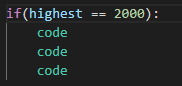

basics
the basics for for programming usually starts at the same place, with a simple program called hello world
Hello World! is a program that simply shows the user text showing "Hello World!" you use what is called a print statement for this.
a print statement looks like this print(). Inside the parenthesis you put in quotations what you want the computer to show the user. Think for a second what it would look like if you wanted to print Hello World! hover over the image to see the answer
go to the next page to learn more!
Images for the Page 2


if statements
sometimes you want something to happen only some of the time, in times like that you use what is called an if statement. It looks like this if(): and then the code is on the next line indented, everything indented is inside this if statement. In the parenthesis you put the condition that will cause the code inside the if stament to occure only if the condition is true when filled it will look something like this
let's look at some real world examples.
if you want to cross the road you wouldn't just cross without checking first, but what would determine if you would cross the street or not? a few examples might be, is there a car coming is the cross walk light on, is there a stop sign? these are just a few examples of things you might think about before crossing the street.
now the conditions will where you are comparing if 2 things are equal, you wouldn't just use =, but rather you would use == dont think about it too much and just accept it.
Images for the Page 3
